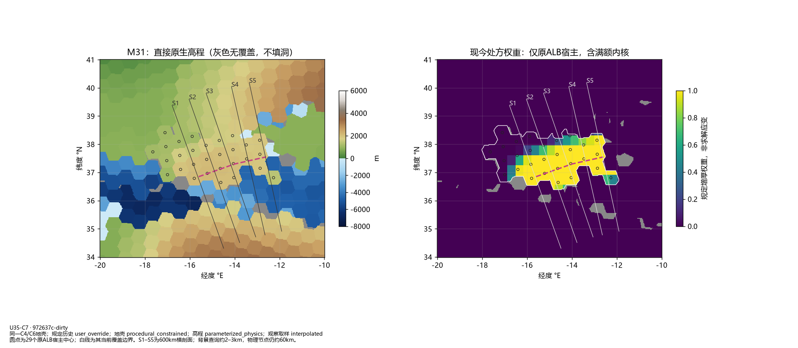
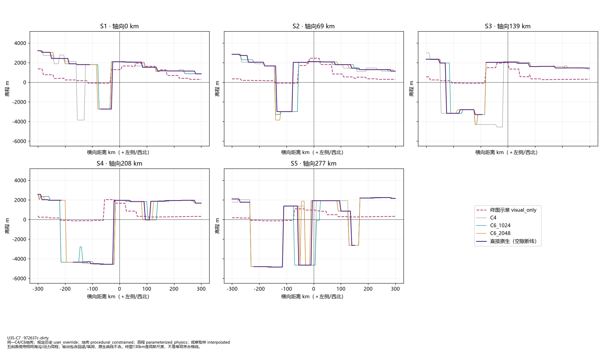
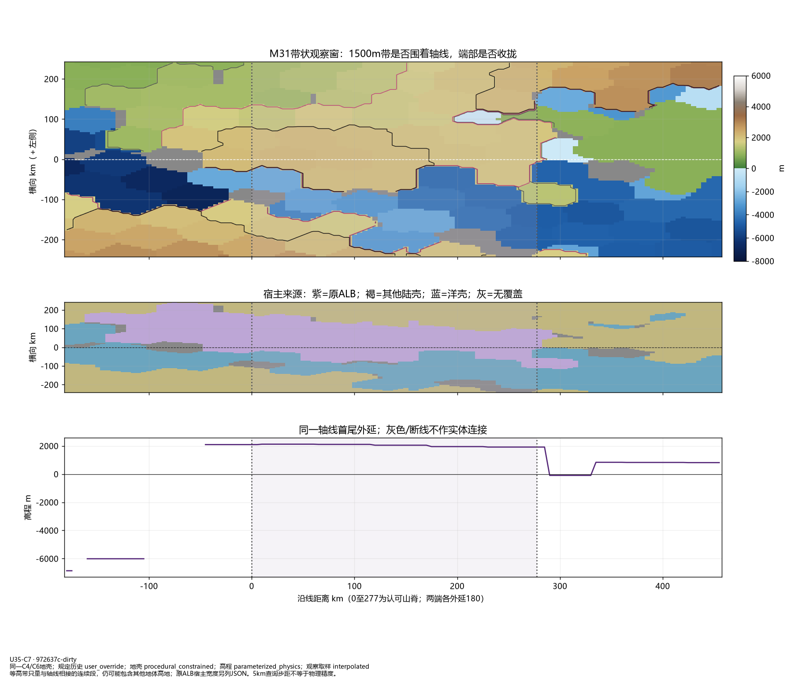
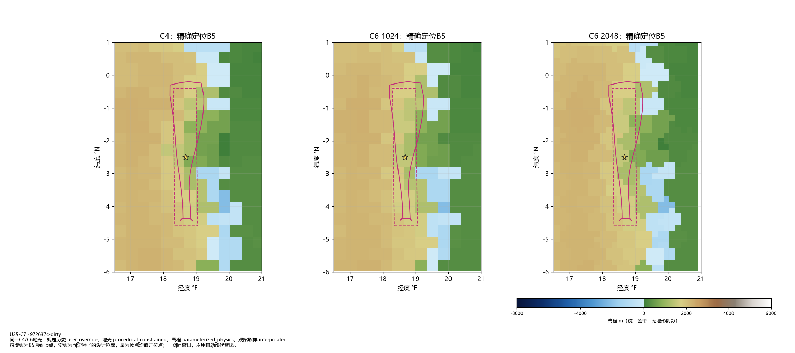
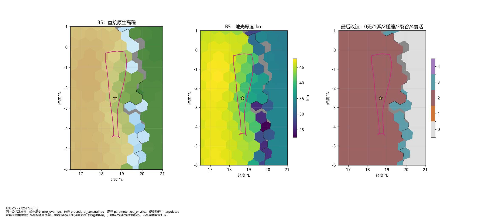
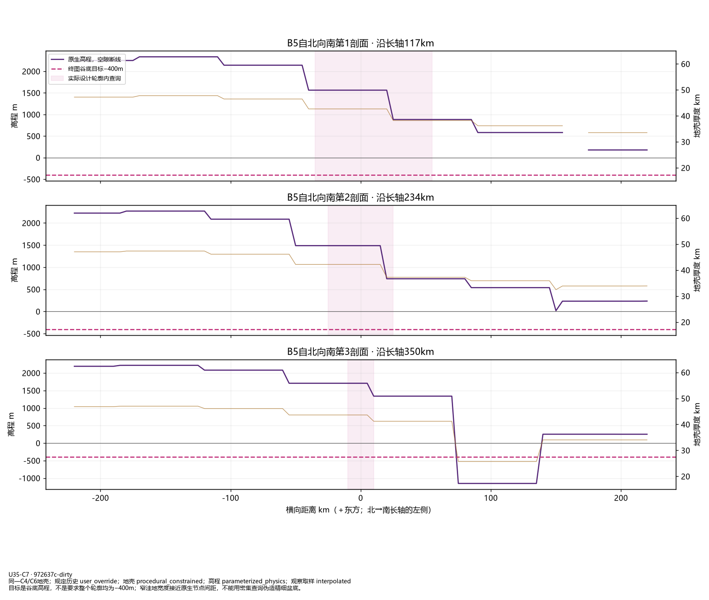

U35-C7：山弧横剖面、二维宽度与B5精确定位
只读同一C4/C6原生状态；没有修改地形。灰色是无原生覆盖，密集取样不是更高物理分辨率。
45_arc_sections_map.png

46_arc_transverse_profiles.png

47_arc_width_and_ends.png

48_B5_location_comparison.png

49_B5_native_crust.png

50_B5_profiles.png

C6对照 · 未改变的C6标准图组